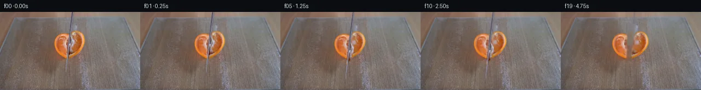

![首帧]()

Round 00
2026-11-04T23:35:57.868896+00:00像素候选变化代码 +273/−0inspection 更新
pixels 5898e00e71afb68c · code 665e338b99cafcb9
查看本轮 generate.py 真实 diff
--- previous/generate.py
+++ current/generate.py
@@ -0,0 +1,273 @@
+"""Deterministic local source-pixel continuation. No models or render engines."""
+from pathlib import Path
+import json, base64, re
+import numpy as np
+from PIL import Image, ImageDraw
+import cv2
+from scipy.ndimage import distance_transform_edt, gaussian_filter
+from artifact_io import save
+
+ROOT = Path(__file__).resolve().parent
+H, W = 144, 256
+SOURCE = np.array(Image.open(ROOT / 'first_frame.png').convert('RGB'))
+Y, X = np.mgrid[:H, :W].astype(np.float32)
+
+def contour_alpha(points, feather=.85):
+ scale = 8
+ mask = np.zeros((H*scale, W*scale), np.uint8)
+ cv2.fillPoly(mask, [np.rint(np.array(points)*scale).astype(np.int32)], 255)
+ a = cv2.resize(mask.astype(np.float32)/255, (W,H), interpolation=cv2.INTER_AREA)
+ if feather:
+ a = cv2.GaussianBlur(a, (0,0), feather)
+ a[a < .003] = 0
+ a[a > .997] = 1
+ return a
+
+def smooth(q):
+ q = np.clip(q, 0, 1)
+ return q*q*(3-2*q)
+
+def composite(background, foreground, a):
+ return background*(1-a[...,None]) + foreground*a[...,None]
+
+fruit_outline = [
+ (98.7,56),(99.5,51),(101.5,47),(104,43),(108,40.4),
+ (113,38.9),(117.3,38.7),(121,39.2),(124,40.5),(127,41.6),
+ (129,39),(131,36.8),(135,34.5),(141.8,34.5),(146,37),
+ (149,40),(151.5,43),(153,47),(154.3,52),(154,56.5),
+ (152.7,60.5),(150.2,65.5),(147,70),(143.8,74.1),
+ (139,78.5),(134,82),(128.2,85),(123.5,86.0),(118,84.7),
+ (112,81.5),(108,78),(105,74),(102,69),(100,65),(98.7,60)]
+fruit_a = contour_alpha(fruit_outline, .42)
+# The silhouette is read from the source, including the wider reflections over flesh.
+blade_y = np.array([0,10,20,30,40,45,50,55,60,65,70,75,80,85,90,100,108,111], np.float32)
+blade_l = np.array([131.0,129.8,128.6,127.5,126.1,125.6,124.8,124.2,123.7,123.2,122.7,122.2,121.8,121.3,120.9,119.9,119.4,119.7],np.float32)
+blade_r = np.array([134.0,133.1,132.6,131.4,129.2,129.7,134.1,134.8,134.5,133.7,131.6,128.2,125.4,124.1,123.4,122.1,120.6,120.0],np.float32)
+knife_outline = list(zip(blade_l,blade_y)) + list(zip(blade_r[::-1],blade_y[::-1]))
+knife_a = contour_alpha(knife_outline, .30)
+# Tight local traditional inpainting removes the original blade from the fruit.
+knife_hard = (knife_a>.005).astype(np.uint8)*255
+fruit_uncovered = cv2.inpaint(SOURCE, knife_hard, 3, cv2.INPAINT_TELEA).astype(np.float32)
+
+# Reconstruct only the small covered board patch. Reuse neighboring glass/wood
+# texture at equal y, preserving the existing broad contact shadow below the fruit.
+fruit_hard = (fruit_a>.005).astype(np.uint8)*255
+background = cv2.inpaint(fruit_uncovered.astype(np.uint8), fruit_hard, 7, cv2.INPAINT_NS).astype(np.float32)
+# Add same-row donor high frequencies so uncovered gaps are not a smooth paint patch.
+donor = np.roll(fruit_uncovered, -58, axis=1)
+donor_detail = donor - cv2.GaussianBlur(donor,(0,0),2.0)
+background += donor_detail * .68 * fruit_a[...,None]
+background = np.clip(background,0,255)
+# Outside reconstruction support, retain original, stationary pixels precisely.
+background[fruit_a==0] = fruit_uncovered[fruit_a==0]
+
+# Unmix boundary pixels; source textures remain the dominant rendered material.
+def unmix(image, backing, a):
+ p = image - backing*(1-a[...,None])
+ fg = np.divide(p, a[...,None], out=np.zeros_like(p), where=a[...,None]>.0001)
+ return np.clip(fg,0,255)
+fruit_rgb = unmix(fruit_uncovered, background, fruit_a)
+knife_rgb = unmix(SOURCE.astype(np.float32),fruit_uncovered,knife_a)
+
+# Partition through the visible cutting plane, with antialiasing across the edge.
+cut_x = 132.0 - .105*Y
+signed = X-cut_x
+left_weight = np.clip(.5-signed,0,1)
+left_a = fruit_a*left_weight
+right_a = fruit_a*(1-left_weight)
+# Locally reconstructed center retains moisture and flesh color. At separation,
+# shade a narrow inner rim to imply the freshly exposed cut thickness.
+inner_left = np.exp(-np.maximum(-signed,0)**2/2.0)*left_weight*fruit_a
+inner_right = np.exp(-np.maximum(signed,0)**2/2.0)*(1-left_weight)*fruit_a
+left_coords = np.column_stack([X[left_a>.5], Y[left_a>.5]])
+right_coords = np.column_stack([X[right_a>.5], Y[right_a>.5]])
+
+# A knife drawn downward needs material above the input's upper crop. Extrapolate
+# only that narrow continuation from the existing top metal cross section.
+EXT = 56
… diff truncated; 186 more lines …